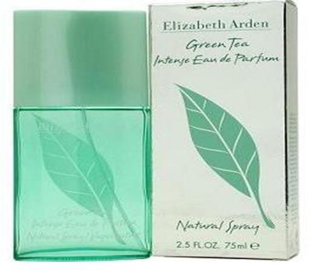

Дамски парфюми
Elizabeth Arden Green Tea
Освежаващи цитрусови нотки, ревен и бергамот в комбинация с нежен аромат на кимион. В сърцевината на този зашеметяващ аромат ще откриете акценти на жасмин, карамфил, копър и семена на целина. Уханието на дъбов мъх, бяла амбра и съблазняващ мускус е неповторимо. Този приятен ефирен аромат на Elizabeth Arden е Вашето перфектно средство за освежаване в горещите летни дни.
Salvatore Ferragamo Incanto Shine

Свеж плодово-цветен аромат, предназначен за игриви момичета и за момичета, които обичат да се озоват в един фантастичен свят. Също така - за жени, които знаят какво искат, но и за такива, които никога не забравят да мечтаят. Излъчващ радост и ухание на ананас, праскови и божури с ориенталски бял кедър. Salvatore Ferragamo е идеален за слънчевите дни на пролетта и лятото, но и за студените дни.